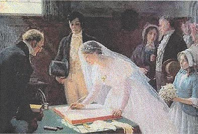

Welcome To...
The GENEALOGY Section
of the Tripartite Website
Homepage
Introduction
Following my introduction to genealogy as described in 'About the Author',
I researched the history and origins of several families in addition to my own (over the past 15 years)
and in so doing, have accumulated masses of information. Much of this has been shared with interested
parties (from whom some of it derived) but it seemed sensible now to bring this into the public domain
- available at one site - in the event future researchers may find it useful or interesting.

'Signing The Register' by E. B. Leighton
Click on the major Links below for further information on these families. Some of these will be more
comprehensive than others and some more circumscribed to particular events. (Most are still 'under
construction').
The Genealogy of The Browne Family
The Genealogy of The Jermy Family
'Miles and Miles of Hobarts'
The Genealogy of the Jermy-Larner Family
The Murders At Stanfield Hall
The Genealogy of Some Jermyn and Jermy Families
The Genealogy of The Millman Family
The Genealogy of the Betjemann Family
A Brief Genealogy of Charlie Chaplin
To Tripartite Home Page